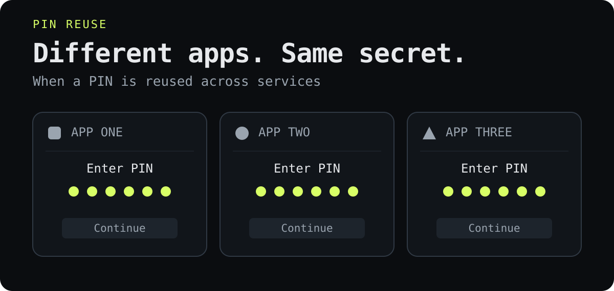

Before You Trust an App With Your PIN
A PIN can carry familiar password risks, including reuse. A quick login tells you very little about how well an app protects your account.
It is easy to treat a PIN as something less consequential than a password. A few digits, a quick unlock, almost a habit. Using the same familiar number in another app can feel harmless.
But if an app sends that reusable PIN to its server to check it, it is using a numeric password. Guessing, capture and reuse are still part of the risk. Calling it a PIN has not changed that. [NIST]
I mean a PIN you keep using here, not a one-time code from a message or authenticator app. That distinction matters.
An app asking me to create a PIN has not earned my trust just by asking. I still decide whether I need the service and trust it enough to create an account. Choosing a unique PIN avoids reuse; it does not make a questionable service trustworthy. And creating an app PIN is no reason to copy the code that unlocks my phone.
Different apps can share the same problem
If I give several services the same PIN, I connect their risks. Exposure in one may give someone a useful secret to try against the others. Extra checks can limit what they do with it, but the secret itself is already out.
A different logo on each login screen does not make the underlying secret different.

The part I find easy to overlook is how much trust this requires. Every service receiving the PIN has to handle it properly. As a user, I usually cannot see whether it ends up in logs, how it is stored, or what stops repeated guesses. A polished app does not answer those questions.
A PIN should not travel over the network in plaintext, where someone observing the traffic could read it. Properly implemented HTTPS protects that connection. The receiving service still handles the secret after decryption, though. Secure transmission does not establish safe storage, and HTTPS alone does not make the service trustworthy. [OWASP: TLS]
“We hash it” is not enough reassurance either. Without a unique salt—a random value added when hashing each account’s secret—the same PIN hashed the same way produces the same result. Attackers can reuse their guessing work across stolen records. Salts prevent that shortcut, but even good password hashing cannot turn a short PIN into a long, unpredictable secret. Once the PIN itself is exposed, a salt does not stop someone trying it elsewhere. [OWASP: password storage]
Someone can simply watch
There is also a much more ordinary risk than a database breach: somebody seeing the digits you enter. In a queue, on a train or at a café, a nearby person or camera may capture your phone’s unlock code.
Using the phone’s built-in fingerprint or face unlock in public can reduce how often you expose that code by typing it. That benefit exists even without passkeys. The fallback PIN still matters, and shielding it when you need to enter it remains sensible. [Police.uk]
This does not make PINs inherently insecure. A PIN checked locally on a well-protected device, with enforced limits on guesses, can be part of strong authentication. Where it is used, what it unlocks and who can observe it all matter.
Passkeys change what you share
This is where passkeys offer a meaningful improvement. The service verifies a cryptographic proof instead of receiving a reusable password or PIN. There is no shared login secret for a fake website to collect in the same way. [FIDO]
A PIN can still be part of that stronger design. It may unlock the passkey locally on your device, just as a fingerprint or face check can. In that flow, the website receives neither your local PIN nor your biometric data. The familiar prompt is doing a different job.
That benefit comes from the authentication design behind the prompt. A fingerprint button on its own does not tell you whether an app uses passkeys, unlocks an existing session, or does something else.
Biometrics also have limits. Sensors can be fooled, devices can be compromised, and people need alternatives when a sensor does not work for them. The convenience is useful; it is not a guarantee about the whole account. [NIST]
The account has more than one way in
Even a strong sign-in can be undermined elsewhere. Imagine an account protected by a passkey, but recoverable through an email account an attacker already controls. If that recovery route is enough to take ownership, the attacker has no reason to defeat the normal login. [OWASP: authentication]
The same applies to adding a new device, keeping a session open, or deciding what a signed-in person can do. Identity and access security depends on how these parts work together, with protection proportionate to what is at stake.
People should not have to audit every app before using it. Services are responsible for safeguards their users cannot inspect. But a convenient interface is not a reason to give a reusable PIN less care than a password.
Being selective about services, avoiding reused secrets and being careful about visible PIN entry all matter. Passkeys and built-in biometrics can reduce particular risks. A PIN can also be a sound part of the protection. None of these choices removes the need to consider the rest of the account.
The label on the login screen should not decide how much trust we give it.